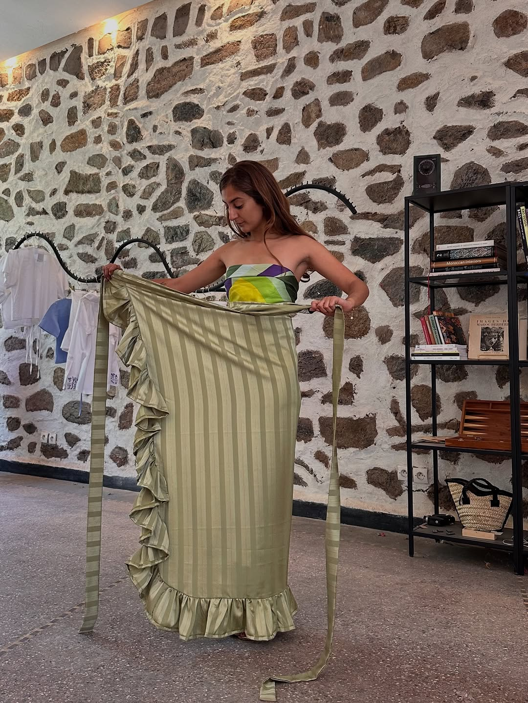
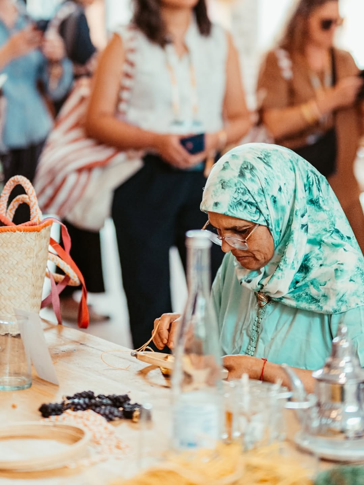
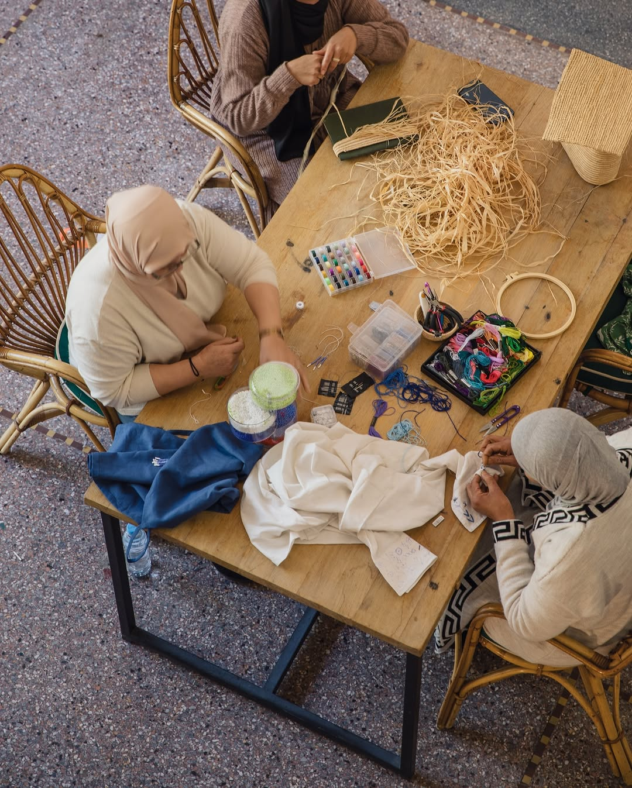
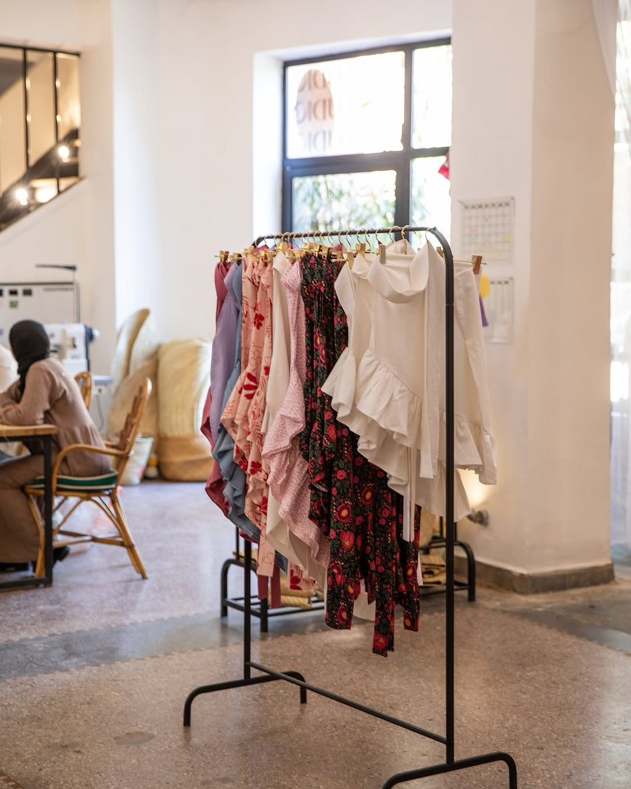
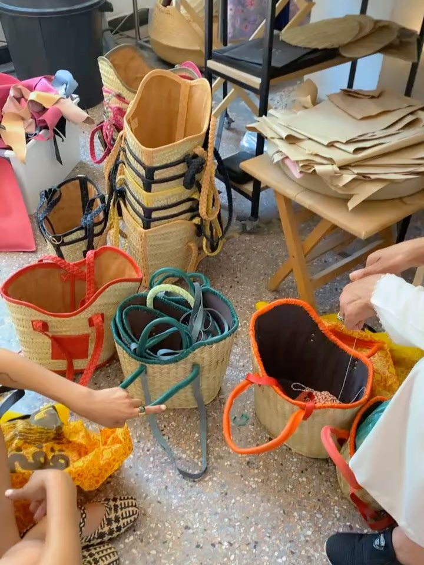
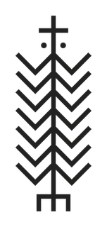

TressageWeavingTejidoDokumaالنسج
Le doum, séché au soleilSun-dried doumDoum secado al solGüneşte kurutulmuş doumالدوم المجفف بالشمس
66 rue YougoslavieGuéliz, Marrakech
« It’s better in Marrakesh. »
Une porte sur une rue de Guéliz — là où chaque pièce YZA commence et s’achève. Le raphia, le doum et la feuille de bananier arrivent bruts ; ils repartent en objets finis, un à un. Aucun moule, aucun raccourci. Juste des mains, du temps, et 37 ans de geste dans la pièce. Le studio est ouvert aux visiteurs : venez voir le travail en cours et repartez avec une pièce, directement des mains qui l’ont faite.A door on a street in Guéliz — where every YZA piece begins and ends. Raffia, doum and banana leaf arrive raw and leave as finished objects, one by one. No moulds, no shortcuts. Just hands, time and 37 years of craft in the room. The studio welcomes visitors: come see the work in progress and take home a piece, directly from the hands that made it.Una puerta en una calle de Guéliz — donde cada pieza YZA empieza y termina. La rafia, el doum y la hoja de banano llegan en bruto y salen como objetos terminados, uno a uno. Sin moldes ni atajos. Solo manos, tiempo y 37 años de oficio. El estudio recibe visitas: ven a ver el trabajo y llévate una pieza directamente de las manos que la hicieron.Guéliz’de bir sokakta bir kapı — her YZA parçasının başlayıp tamamlandığı yer. Rafya, doum ve muz yaprağı ham gelir; tek tek bitmiş nesnelere dönüşür. Kalıp yok, kestirme yok. Yalnızca eller, zaman ve 37 yıllık ustalık. Stüdyo ziyaretçilere açık: çalışmayı izleyin ve bir parçayı onu yapan ellerden alıp götürün.باب في شارع بكليز — هنا تبدأ كل قطعة YZA وتكتمل. تصل الرافيا والدوم وأوراق الموز خامًا، وتغادر قطعًا مكتملة، واحدة تلو الأخرى. لا قوالب ولا اختصارات. فقط أيادٍ ووقت وخبرة تمتد إلى 37 عامًا. يستقبل الاستوديو الزائرات: تعالي لمشاهدة العمل، وخذي قطعة مباشرة من الأيدي التي صنعتها.
La visiteYour visitLa visitaZiyaretالزيارة
Des sacs en plein tissage, des perles qu’on noue, du raphia qui sèche à la lumière. Poussez la porte — il y a presque toujours quelqu’un à l’établi, et presque toujours de l’eau sur le feu.Bags being woven, beads being knotted, raffia drying in the light. Come through the door — there is almost always someone at the bench, and almost always a kettle on.Bolsos en pleno tejido, cuentas que se anudan, rafia que se seca a la luz. Entra — casi siempre hay alguien en la mesa de trabajo y agua al fuego.Dokunmakta olan çantalar, düğümlenen boncuklar, ışıkta kuruyan rafya. Kapıdan girin — tezgâhta neredeyse her zaman biri, ocakta da su vardır.حقائب تُنسج وخرز يُعقد ورافيا تجف في الضوء. ادفعي الباب — غالبًا ستجدين من تعمل على الطاولة، وماءً يغلي للشاي.




L’atelierThe atelierEl tallerAtölyeالأتيليه
La Fatima crochète le raphia depuis 37 ans. Elle le lit comme d'autres lisent une page — à la tension, à la densité, à la façon dont le fil tient. Ses mains savent avant elle.La Fatima has crocheted raffia for 37 years. She reads it the way others read a page - by tension, density, the way the thread holds. Her hands know before she does.La Fatima lleva 37 años tejiendo la rafia a ganchillo. La lee como otras leen una página — por la tensión, la densidad, la forma en que el hilo aguanta. Sus manos saben antes que ella.La Fatima 37 yıldır rafyayı tığla örüyor. Onu başkalarının bir sayfayı okuduğu gibi okur — gerginliğinden, yoğunluğundan, ipin tutuşundan. Elleri ondan önce bilir.لالة فاطمة تحوك الرافيا بالكروشيه منذ 37 عامًا. تقرأها كما يقرأ غيرها صفحة — من شدّها، وكثافتها، وطريقة تماسك الخيط. يداها تعرفان قبلها.
À ses côtés, Fatima façonne à la main les pompons de perles dorées et brode les signes berbères qui signent chaque pièce Jawhara, et Fatimzahra coupe les tissus et coud chaque vêtement. Souad, Kawtar et Wissal travaillent à leurs côtés. Ce qu'elles réalisent, aucune machine ne sait tout à fait le refaire. Et à la boutique, notre équipe vous accueille pour vous présenter l'univers YZA et vous aider à trouver la pièce parfaite.Beside her, Fatima hand-crafts the golden bead tassels and embroiders the Berber signs that sign every Jawhara piece, while Fatimzahra cuts the fabrics and sews every garment. Souad, Kawtar and Wissal work alongside them. What they make cannot quite be replicated by a machine. And in the boutique, our team welcomes you, introduces the YZA universe and helps you find the perfect piece.A su lado, Fatima confecciona a mano las borlas de cuentas doradas y borda los signos bereberes que firman cada pieza Jawhara, y Fatimzahra corta los tejidos y cose cada prenda. Souad, Kawtar y Wissal trabajan a su lado. Lo que hacen no puede replicarlo del todo una máquina. Y en la boutique, nuestro equipo te recibe, te presenta el universo YZA y te ayuda a encontrar la pieza perfecta.Yanında, Fatima altın boncuklu püskülleri elle yapar ve her Jawhara parçasını imzalayan Berberi işaretleri işler; Fatimzahra ise kumaşları keser ve her giysiyi diker. Souad, Kawtar ve Wissal onların yanında çalışır. Yaptıklarını bir makine tıpatıp kopyalayamaz. Butikte ise ekibimiz sizi karşılar, YZA evrenini tanıtır ve mükemmel parçayı bulmanıza yardımcı olur.إلى جانبها، تصنع فاطمة يدويًا شراشيب الخرز الذهبي وتطرّز الرموز الأمازيغية التي توقّع كل قطعة Jawhara، وتقصّ فاطمة الزهراء الأقمشة وتخيط كل قطعة ملابس. وتعمل سعاد وكوثر ووصال إلى جانبهنّ. ما يصنعنه لا تستطيع آلة أن تكرّره تمامًا. وفي البوتيك، تستقبلك فريقنا لتقدّم لك عالم YZA وتساعدك في العثور على القطعة المثالية.
Toute l'entreprise YZA est 100 % féminine — de l'atelier à la boutique. Chaque pièce que vous portez soutient des mains spécialisées et un savoir-faire qui demande des décennies à maîtriser — et une rémunération deux fois supérieure au taux du marché local, pour que ce savoir-faire fasse vivre celles qui le portent.The whole YZA company is 100% women-run — from the atelier to the boutique. Every piece you carry supports specialised hands and a craft that takes decades to master — paid at double the local market rate, so that skill actually supports the women who hold it.Toda la empresa YZA es 100 % femenina — del atelier a la boutique. Cada pieza que llevas sostiene manos especializadas y un oficio que tarda décadas en dominarse — pagado al doble de la tarifa del mercado local, para que ese saber sostenga a quienes lo llevan.YZA'nın tamamı %100 kadın bir şirkettir — atölyeden butiğe. Taşıdığınız her parça, uzman elleri ve ustalaşması on yıllar süren bir zanaatı destekler — yerel piyasa ücretinin iki katı ödenerek, böylece bu emek onu taşıyan kadınları gerçekten geçindirsin.شركة YZA بأكملها نسائية 100٪ — من الأتيليه إلى البوتيك. كل قطعة تحملينها تدعم أيادي متخصّصة وحرفةً يستغرق إتقانها عقودًا — بأجرٍ ضعف السعر المحلي، لتكون هذه الحرفة سندًا حقيقيًا لمن تحملنها.
ans de crochet dans les mains de La Fatimayears of crochet in La Fatima’s handsaños de ganchillo en las manos de La FatimaLa Fatima’nın ellerinde yıllık tığ işiعامًا من الكروشيه بين يدي لالة فاطمة
féminine, de l’atelier à la boutiquewomen-run, from atelier to boutiquefemenina, del taller a la boutiqueatölyeden butiğe kadın emeğiنسائية، من الأتيليه إلى البوتيك
le taux du marché local, pour chaque artisanethe local market rate, for each artisanla tarifa del mercado local, para cada artesanaher zanaatkâr için yerel piyasa ücretinin iki katıالسعر المحلي، لكل حرفية
Arts & matièresArts & materialsArtes y materialesSanatlar ve malzemelerالفنون والمواد
Trois fibres végétales, sourcées et séchées, confiées à l'atelier. Chacune plie différemment, prend la couleur différemment, vieillit différemment. Les tisseuses savent au toucher — quel brin pour une base, lequel pour le bord d'une anse, à quelle tension tirer pour tenir la forme des années durant.Three plant fibres, sourced and dried, handed to the atelier. Each bends differently, holds colour differently, ages differently. The weavers know by touch - which strand for a base, which for a handle edge, how tight to pull to hold shape for years.Tres fibras vegetales, seleccionadas y secadas, entregadas al atelier. Cada una se dobla distinto, toma el color distinto, envejece distinto. Las tejedoras saben al tacto — qué hebra para una base, cuál para el borde de un asa, con cuánta tensión tirar para mantener la forma durante años.Üç bitkisel lif; tedarik edilip kurutulur ve atölyeye verilir. Her biri farklı bükülür, rengi farklı tutar, farklı yaşlanır. Dokumacılar dokunuşla bilir — taban için hangi tel, sap kenarı için hangisi, yıllarca biçimi korumak için ne kadar sıkı çekileceğini.ثلاثة ألياف نباتية، تُنتقى وتُجفّف وتُسلَّم للأتيليه. كلٌّ ينثني بطريقة، ويمسك اللون بطريقة، ويشيخ بطريقة. تعرف النسّاجات باللمس — أيّ خصلة للقاعدة، وأيّها لحافة المقبض، وبأيّ شدٍّ يُسحب ليحفظ الشكل سنوات.
Le doum est une ressource renouvelable : on le taille pour que le palmier continue de pousser, on ne l'arrache pas. Séché au soleil puis tissé entièrement à la main, il traverse plus de 30 ans — et redevient compost en fin de vie. Rien ne se perd.Doum is a renewable resource: it's trimmed so the palm keeps growing, never uprooted. Sun-dried, then woven entirely by hand, it lasts over 30 years — and returns to compost at the end of its life. Nothing wasted.El doum es un recurso renovable: se recorta para que la palmera siga creciendo, nunca se arranca. Secado al sol y tejido enteramente a mano, dura más de 30 años — y vuelve al compost al final de su vida. Nada se pierde.Doum yenilenebilir bir kaynaktır: hurma ağacı büyümeye devam etsin diye kesilir, asla sökülmez. Güneşte kurutulup tamamen elle dokunur, 30 yıldan fazla dayanır — ve ömrünün sonunda komposta döner. Hiçbir şey boşa gitmez.الدوم مورد متجدد: يُقلَّم كي تستمر النخلة في النمو، ولا يُقتلَع أبدًا. يُجفَّف في الشمس ثم يُنسَج يدويًا بالكامل، ويدوم أكثر من 30 عامًا — ليعود سمادًا في نهاية عمره. لا شيء يُهدَر.
Une finition cuir à chaque bord, là où le sac s'use le plus — issu de tanneries locales marocaines, pas d'un cuir végan importé qui n'aurait aucun sens pour une marque locale. Un travail lent, fait pour survivre d'une décennie à la mode jetable. Plus de mains, moins de machines.A leather finish at every edge where a bag wears hardest — sourced from local Moroccan tanneries, not an imported vegan leather that wouldn't make sense for a local brand. Slow work, made to outlast fast fashion by a decade. More hands, less machines.Un acabado en cuero en cada borde, donde el bolso se desgasta más — de curtidurías locales marroquíes, no de un cuero vegano importado que no tendría sentido para una marca local. Trabajo lento, hecho para durar una década más que la moda rápida. Más manos, menos máquinas.Çantanın en çok yıprandığı her kenarda deri finiş — yerel Fas tabakhanelerinden, yerel bir marka için anlamsız olacak ithal vegan deriden değil. Yavaş bir iş, hızlı modayı on yıl geride bırakmak için yapılmış. Daha çok el, daha az makine.تشطيب جلدي عند كل حافة حيث تتآكل الحقيبة أكثر — من مدابغ مغربية محلية، لا من جلد نباتي مستورد لا معنى له لعلامة محلية. عملٌ بطيء، صُنع ليدوم عقدًا بعد أن تزول الموضة السريعة. أيادٍ أكثر، آلات أقل.
Et le tissu : la collection Jawhara habille tops, jupes paréo et pantalons — coupés et cousus dans l'atelier, brodés de signes berbères et finis de pompons de perles à la main. Quatre gestes signent chaque pièce YZA : le tressage du doum, le crochet du raphia, la broderie perlée, la couture.And the fabric: the Jawhara collection dresses tops, pareo skirts and trousers — cut and sewn in the atelier, embroidered with Berber signs and finished with hand-made bead tassels. Four gestures sign every YZA piece: doum weaving, raffia crochet, beaded embroidery, and sewing.Y el tejido: la colección Jawhara viste tops, faldas pareo y pantalones — cortados y cosidos en el atelier, bordados con signos bereberes y rematados con borlas de cuentas hechas a mano. Cuatro gestos firman cada pieza YZA: el trenzado del doum, el ganchillo de la rafia, el bordado con cuentas y la costura.Ve kumaş: Jawhara koleksiyonu topları, pareo etekleri ve pantolonları giydirir — atölyede kesilip dikilir, Berberi işaretlerle işlenir ve elle yapılmış boncuklu püsküllerle tamamlanır. Her YZA parçasını dört el işi imzalar: doum örme, rafya tığ işi, boncuklu nakış ve dikiş.والقماش: مجموعة Jawhara تلبس التوبات وتنانير الباريو والسراويل — تُقصّ وتُخاط في الأتيليه، وتُطرَّز برموز أمازيغية وتُنهى بشراشيب خرز مصنوعة يدويًا. أربع حرفٍ توقّع كل قطعة YZA: تضفير الدوم، وكروشيه الرافيا، والتطريز المخرَّز، والخياطة.

Le doum, séché au soleilSun-dried doumDoum secado al solGüneşte kurutulmuş doumالدوم المجفف بالشمس
Le raphia, teint à la mainHand-dyed raffiaRafia teñida a manoElde boyanmış rafyaالرافيا المصبوغة يدويًا
Les signes berbèresBerber symbolsSignos bereberesBerberi işaretleriالرموز الأمازيغية
Le tissu JawharaJawhara fabricEl tejido JawharaJawhara kumaşıقماش جوهرة
Un dimanche par moisOne Sunday a monthUn domingo al mesAyda bir pazarأحدٌ واحد في الشهر
Un dimanche par mois, l’atelier devient le Dimanche créatif — une grande table, une théière de thé à la menthe et quelques heures sans hâte auprès des femmes qui font nos sacs. Les téléphones vont dans le panier près de la porte ; les mains vont à la fibre.One Sunday a month, the atelier becomes Creative Sunday — a big table, a pot of mint tea and a few unhurried hours with the women who make our bags. Phones go in the basket by the door; hands go to the fibre.Un domingo al mes, el taller se convierte en el Domingo Creativo: una mesa grande, té a la menta y unas horas sin prisa con las mujeres que hacen nuestros bolsos. Los teléfonos se quedan en la cesta junto a la puerta; las manos van a la fibra.Ayda bir pazar, atölye Yaratıcı Pazar’a dönüşür: büyük bir masa, nane çayı ve çantalarımızı yapan kadınlarla telaşsız birkaç saat. Telefonlar kapının yanındaki sepete, eller liflere gider.في أحد أيام الأحد من كل شهر، يتحول الأتيليه إلى الأحد الإبداعي: طاولة كبيرة وإبريق شاي بالنعناع وساعات هادئة مع النساء اللواتي يصنعن حقائبنا. توضع الهواتف في السلة قرب الباب، وتتجه الأيدي إلى الألياف.
Aucun écran entre vous et l’ouvrage — seulement le point, le thé et la bonne compagnie.No screen between you and the work — just the stitch, the tea and good company.Ninguna pantalla entre tú y el trabajo: solo la puntada, el té y buena compañía.Sizinle işin arasında ekran yok — yalnızca ilmek, çay ve güzel sohbet.لا شاشة بينك وبين العمل — فقط الغرزة والشاي والصحبة الطيبة.Réserver une place à la tableReserve a place at the tableReserva un lugar en la mesaMasada yer ayırtınاحجزي مكانًا على الطاولة
Une journée au studioA day at the studioUn día en el estudioStüdyoda bir günيوم في الاستوديو
Ce que vous verrezWhat you will seeLo que verásGöreceklerinizما سترينهDu mercredi au dimanche, la porte reste ouverte du midi au soir. Selon l’heure à laquelle vous poussez, vous tombez sur un autre moment de l’ouvrage.From Wednesday to Sunday, the door stays open from noon until evening. Arrive at a different hour and discover another moment in the work.De miércoles a domingo, la puerta permanece abierta del mediodía a la noche. Según la hora, descubrirás otro momento del trabajo.Çarşambadan pazara kapı öğlenden akşama kadar açıktır. Geldiğiniz saate göre işin başka bir anına rastlarsınız.من الأربعاء إلى الأحد، يبقى الباب مفتوحًا من الظهر حتى المساء. وفي كل ساعة تكتشفين لحظة أخرى من العمل.
Le raphia de la veille sèche encore près de la fenêtre. notre équipe ouvre la boutique, et l’eau est déjà sur le feu.Yesterday’s raffia is still drying by the window. our team opens the boutique, and the kettle is already on.La rafia del día anterior aún se seca junto a la ventana. nuestro equipo abre la boutique y el agua ya está al fuego.Dünden kalan rafya pencerenin yanında kurur. ekibimiz butiği açar; su çoktan ocağa konmuştur.تجف رافيا الأمس قرب النافذة. تفتح فريقنا البوتيك، والماء يغلي للشاي.
L’heure la plus calme, et la meilleure pour regarder : La Fatima est à l’établi, un fruit ou une anse en cours.The quietest hour, and the best for watching: La Fatima is at the bench, working on a fruit or a handle.La hora más tranquila y la mejor para observar: La Fatima trabaja en la mesa, con una fruta o un asa en proceso.En sakin ve izlemek için en güzel saat: La Fatima tezgahta bir meyve ya da sap üzerinde çalışır.أهدأ الساعات وأفضلها للمشاهدة: لالة فاطمة على الطاولة تعمل على ثمرة أو مقبض.
Les pompons dorés et les signes berbères se brodent en fin d’après-midi, quand la lumière tombe de biais sur la table.Golden tassels and Berber symbols are embroidered in the late afternoon, as the light slants across the table.Las borlas doradas y los signos bereberes se bordan al final de la tarde, cuando la luz cae oblicua sobre la mesa.Öğleden sonra ışık masaya eğik düşerken altın renkli püsküller ve Berberi işaretleri işlenir.تُطرّز الشراشيب الذهبية والرموز الأمازيغية آخر النهار، حين يسقط الضوء مائلًا على الطاولة.
On range les fibres, on compte ce qui est parti. Ce qui n’était pas fini attend demain — rien ne se bâcle.We put away the fibres and count what has left. Unfinished work waits until tomorrow — nothing is rushed.Guardamos las fibras y contamos lo que ha salido. Lo que queda sin terminar espera a mañana: nada se hace con prisas.Lifleri toplar, gidenleri sayarız. Bitmeyen iş yarını bekler — hiçbir şey aceleye gelmez.نرتب الألياف ونحصي ما غادر. ينتظر العمل غير المكتمل الغد — لا شيء يُنجز على عجل.
Nous trouverFind usEncuéntranosBizi bulunتجديننا هنا
Le studio est au 66 rue Yougoslavie, en plein Guéliz, juste à côté de la Rôtisserie de la Paix — celle de mon père. Comptez environ dix minutes à pied depuis la place du 16 Novembre ; le trajet en taxi depuis la médina varie selon votre point de départ et la circulation.The studio is at 66 rue Yougoslavie, in the heart of Guéliz, beside my father’s Rôtisserie de la Paix. Allow about ten minutes on foot from Place du 16 Novembre; taxi time from the medina depends on your starting point and traffic.El estudio está en el 66 de la rue Yougoslavie, en pleno Guéliz, junto a la Rôtisserie de la Paix de mi padre. Calcula unos diez minutos a pie desde la plaza del 16 Novembre; el trayecto en taxi desde la medina varía según el punto de partida y el tráfico.Stüdyo Guéliz’in kalbinde, 66 rue Yougoslavie’de, babamın Rôtisserie de la Paix lokantasının yanındadır. Place du 16 Novembre’den yürüyerek yaklaşık on dakika; medinadan taksi süresi çıkış noktasına ve trafiğe bağlıdır.يقع الاستوديو في 66 شارع يوغوسلافيا بقلب كليز، بجانب مطعم والدي Rôtisserie de la Paix. احسبي نحو عشر دقائق سيرًا من ساحة 16 نوفمبر؛ وتختلف مدة التاكسي من المدينة القديمة حسب نقطة الانطلاق وحركة المرور.

Que vous veniez à Guéliz ou que vous commandiez de loin, chaque pièce sort des mêmes mains. Éditions limitées — une fois parties, elles ne reviennent pas.Whether you come to Guéliz or shop from afar, every piece leaves the same hands. Limited editions - once they're gone, they're gone.Tanto si vienes a Guéliz como si compras desde lejos, cada pieza sale de las mismas manos. Ediciones limitadas — una vez agotadas, no vuelven.İster Guéliz'e gelin ister uzaktan alışveriş yapın, her parça aynı ellerden çıkar. Sınırlı sayıda — bittiğinde, biter.سواء جئتِ إلى Guéliz أو تسوّقتِ من بعيد، كل قطعة تخرج من الأيادي نفسها. إصدارات محدودة — وما إن تنفد حتى تختفي.